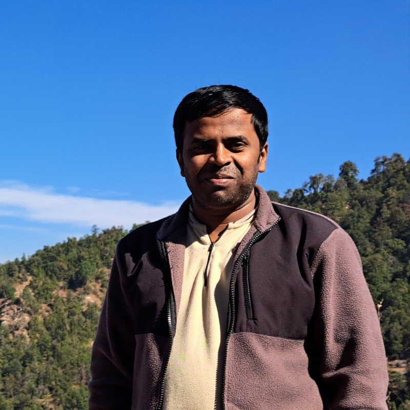

|
I am currently a Research Associate at the Aryabhatta Research Institute of Observational Sciences (ARIES). I obtained my PhD at the Center of Excellence in Space Sciences India, IISER Kolkata and Integrated MSc. (Physics) from the UM-DAE Centre for Excellence in Basic Sciences. Besides research, I am passionate about disseminating science to the masses through popular outreach talks, experimental demonstrations, print and the electronic media. You can find a partial list of outreach efforts I have been involved as a co-founder and an independent volunteer.
Email / LinkedIn / Astrobreeze |
 |
|
We use a Michelson interferometer setup to characterise the phase response of a reflective SLM. The conventional calibration method is time-consuming and we develop a new method using novel phase-masks which can enable threefold faster measurements without modifying any hardware in the experimental setup. To our knowledge, our method is the first endeavour directed towards enabling rapid phase characterisation of an SLM and can have very useful applications in settings which often require frequent and faster phase calibrations such as in astronomy. Chandra and Banerjee, Journal of Modern Optics 67 (7), 628-637, 2020  We have developed a semi-automated pipeline in Python and shell from scratch to analyze all recorded interferograms obtained during our phase calibration experiment of an SLM. The first step in the analysis is to smoothen each interferogram and then make an appropriate 1-D cut in the interferogram at two locations, viz. one in the top half and the other in the bottom half of the interferogram. These values are kept fixed for all interferograms. A peak detection algorithm then detects the number of specified peaks in the fringe pattern and finds the relative shift between the upper half (variable graylevel) and lower half (reference graylevel) of the fringe pattern. We then compute the relative shifts between different graylevels and obtain the calibration curve for our SLM. Chandra and Banerjee, Journal of Modern Optics 67 (7), 628-637, 2020 Inherent defects in the SLM such as their pixelated nature, phase change according to the gray scale and edge effects limit the resolution and the diffraction efficiency of the SLM. IFTAs can be used to design the optimised phase distribution of the rectangular grating in 1D and 2D. SLMs are promising candidates to employ such optimised IFTAs wherein precise control and regulation of applied electrical voltages can enable us to manipulate the amplitude or phase of the incident beam. Another advantage of this method is that no additional changes need to be made in the SLM hardware to realise the goals. Thus, one can make up for the inherent limitations of the SLM and use it to maximum advantage. Besides, many of these optimised IFTAs are fast and computationally feasible. An array of 2D uniform spots can be useful for many applications such as optical trapping, adaptive wavefront sensing applications in an AO system etc. We have developed a code for generating optimised phases for 1D or 2D gratings and achieved experimental realisation of this method by generating an array of 1D/2D spots. Chandra and Banerjee, Journal of Modern Optics 67 (7), 628-637, 2020 We have generated Laguerre-Gaussian (LG) beams of higher orders using our reflective SLM. We obtain LG beams whose radial and azimuthal modes are upto (p,l)=(3,3) (check montage showing LG beams of different radial (p) and azimuthal (l) orders generated using an SLM). To measure the spectrum of a cosmic source, one would require an interferometer which measures one wavelength at a time. This method of measuring spectra becomes challenging to study a source whose spectra changes rapidly with time or a transient source which is visible for only short durations. In our work we show in laboratory settings that it is possible to measure multiple wavelengths at a given time using an adaptive Michelson interferometer wherein one of the mirrors is replaced with an adaptive optical element which is a reflective Spatial Light Modulator (SLM). In addition, this novel approach does not involve moving mechanical parts which is very useful for potential spectroscopic applications using space instruments. Potential applications of this method include studying targets whose optical emission and concomitant spectral signature varies quickly on time-scales of a few tens of milli-seconds such as solar dynamic activity, optical emission from compact objects such as neutron stars and transient events such as gamma-ray bursts (GRBs). Chandra et al., Optics Express 30 (11), 19930-19943, 2022 Observations from ground based telescopes are marred by seeing effects and require adaptive optics systems. AO systems usually use deformable mirrors which are expensive and are used only for wavefront correction. SLMs can function as dynamical optical elements and can work both as an adaptive wavefront sensor as well as to compensate for wavefront abberation. AO using SLMs is an active area of research and we are developing an open-loop AO system in laboratory settings using Zernike phase correction.
List of publications: ADS Library |
|
8.
|
|
7.
|
|
6.
|
|
5.
|
|
4.
|
|
3.
|
|
|
2.
|
 |
1.
|
|
16. Swift/XRT observations of RX J0218.7+3854
15. Optical follow-up observations of GOTO065054.49+593624.51
14. Swift/XRT observations of the X-ray transient EP240408a
13. Swift/XRT observation of the X-ray transient SRGA J144459.2-604207
12. Swift/BAT confirms X-ray brightening of the black hole X-ray binary 4U 1543-47
11. Swift/XRT observations of GRB 221017A
10. Swift/XRT confirms brightening of the X-ray transient 2E 1050.8-6200
9. Rapid X-ray brightening of XTE J1701-462
8. Swift/XRT confirms outburst of XTE J1701-462
7. New outburst of GX 339-4 confirmed by Swift/XRT
6. Swift/XRT observations of XTE J1829-098
5. Detection of X-ray brightening from the X-ray pulsar XTE J1829-098
4. Swift/XRT non-detection of the X-ray transient MAXI J1957+032
3. Swift detects rapid outburst decay from MAXI J1957+032
2. Swift follow-up of the newly discovered accreting millisecond X-ray pulsar MAXI J1816-195
1. MAXI/GSC detection of a new X-ray outburst from the Be/X-ray binary pulsar H1145-619
AstroSat (total 440 ks awarded as PI) 3.6-m Devasthal Optical Telescope (7 quarters in regular proposals as PI, 5 quarters in a regular proposal as Co-PI) 1.3-m Devasthal Fast Optical Telescope (4 nights in a regular proposal as PI, 2 nights Director's Discretionary Time observations as PI) 2-m Himalayan Chandra Telescope (Director's Discretionary Time observations as PI, 1 night in a regular proposal) Neil Gehrels Swift Observatory (total 291 ks awarded as PI) Neutron star Interior Composition Explorer (total 125 ks awarded as PI) Giant Metrewave Radio Telescope (4 hours DDT observations as PI)
Programming
|
|
Development of a semi-coherent method to search for continuous gravitational waves (Aug-Sept 2014
and Nov-April 2015)
|
|
Teaching assistant, Modern physics and optics (PH2203), IISER Kolkata (Spring 2019)
|
|
Measurement Science and Technology: 2022 Outstanding Reviewer Award.
Machine Learning with Python
|
|
Referee for APL Photonics, APL Machine Learning, Applied Physics Letters, Applied Optics, Biomedical Optics Express, Journal of Optics, Journal of Physics Communications, Journal of the Optical Society of America A, Measurement Science and Technology, New Journal of Physics, Optical Engineering, Optics Express, Optics Letters, OSA Continuum, Physica Scripta, Review of Scientific Instruments Recognized Optica (formerly OSA) reviewer 2024 Recognized Optica (formerly OSA) reviewer 2023 Recognized Optical Engineering reviewer 2022 Recognized Optica (formerly OSA) reviewer 2021 IOP Trusted Reviewer LOC for three-day student-organised conference "Contemporary Trends in Optics 2019" (CoOpt-2019) LOC for one-day outreach workshop on International Day of Light (IDL) 2018 LOC for three-day student-organised conference "Contemporary Trends in Optics 2017" (CoOpt-2017) LOC (lead) for three-day workshop on "Space Astronomy and Telescope Making" 2017 LOC (lead) for World Space Week 2015 outreach events |
|
Virtual outreach talk: Delivered a popular astronomy talk (including discussions on existing/upcoming astronomy facilities in India + India's participation in International megaprojects SKA, TMT, LIGO and career prospects for engineers in astronomy) to students of Coochbehar Government Engineering College as part of their college fest "Tech-O-Ber" during October 2021
Recording of virtual talk
|
|
Co-produced popular science interviews with some like-minded research students. The main aim of interviewing scientists was to know how they got into science and their research areas aimed for a layman. We hope these conversations will inspire young students to get excited about science and take up scientific research as a career.
|
Taking the pulse of a neutron star for almost five decades finds nearly cyclic spin changes on long time-scales
|
Prof. Ayan Banerjee, IISER Kolkata (PhD advisor)
I am indebted to the Indian taxpayers who have funded my education, training and research since I was an undergrad student and enabled me to pursue my passion. Thanks to the funding agencies Department of Science and Technology (DST), the Department of Atomic Energy (DAE) and the Ministry of Education (erstwhile MHRD). Thanks also to the German taxpayers for enabling my visit to the Max Planck Institute for Gravitational Physics, Germany.
Available upon request
|